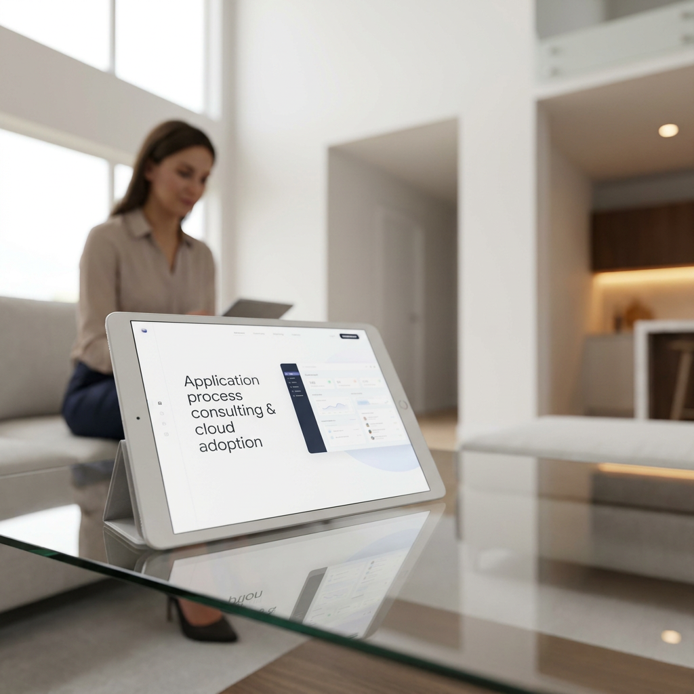
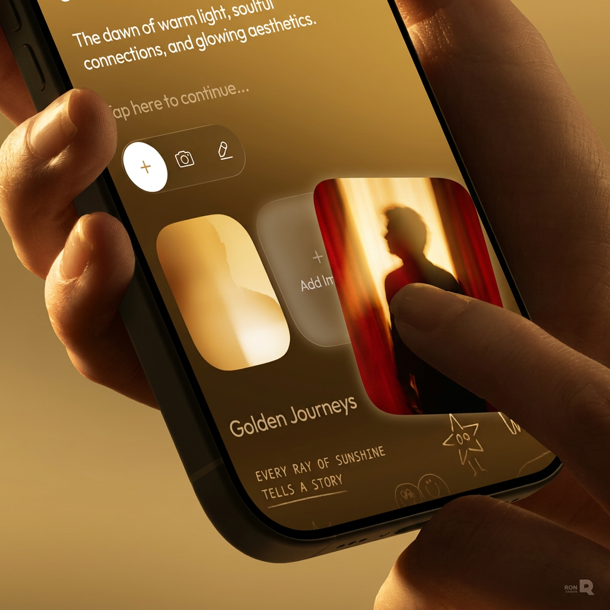

The right call,
before the big spend.
Application modernization, process consulting, DevOps assessment & strategy, and cloud adoption & migration guidance — the strategic decisions that shape everything you build next.


Decisions that
shape what follows.
The most expensive IT mistakes are made early — in the choices about what to modernize, how to adopt cloud, and where to invest. Meritech's IT Consulting brings application modernization, process consulting, DevOps assessment & strategy, and cloud adoption & migration guidance so those decisions are made on evidence, not assumption.
Assessment comes first, strategy follows — and you walk away with a plan you can act on, not just a slide deck.
Advice across
the big decisions.
Is this the right fit?
Leaders weighing modernization, cloud, or process change and the investment behind it — who want the decision grounded in evidence before committing the budget.
Organisations whose applications need modernizing but aren't sure how far to go — where the choice between refactor, replatform, and rebuild carries real cost either way.
Teams considering cloud adoption who want a defensible migration strategy first — knowing whether, what, and how to move before any workload does.
Decide blind vs
decide informed.
| Dimension | Deciding without advice | With Meritech IT Consulting |
|---|---|---|
| Basis | Assumption & vendor pitch | Evidence & assessment |
| Modernization | All-or-nothing | Scoped to value |
| DevOps | Adopt & hope | Assessed & strategised |
| Cloud | Lift-and-shift by default | Defensible strategy |
| Risk | Discovered late | Surfaced early |
Find the right engagement.
Every consulting engagement starts from a different decision. The difference is which question you need answered first.
Assess to strategy.
Evaluate applications, processes, delivery practices, and cloud readiness — an evidence base before any recommendation is made.
Balance cost, risk, and value across modernization, process, DevOps, and cloud paths — surfacing problems in planning, not production.
A clear, actionable strategy for modernization, DevOps, or cloud adoption — scoped to value and defensible to the board.
Guidance through the choice and into execution — so the strategy survives contact with delivery.
Before you choose
an IT consultant.
Facing a big
IT decision?
Before you commit the budget — get application modernization, DevOps, and cloud strategy grounded in assessment, not assumption.